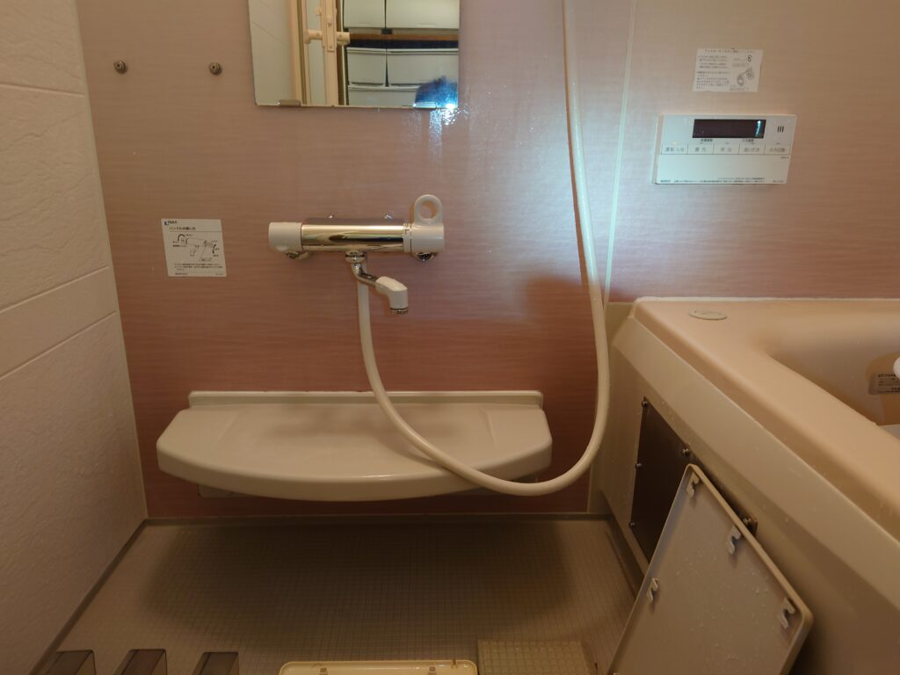
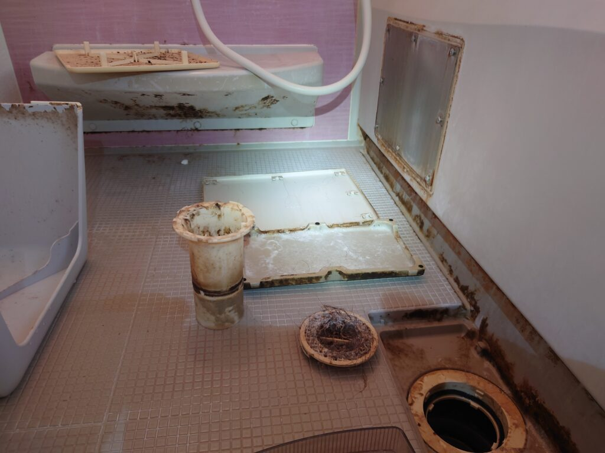
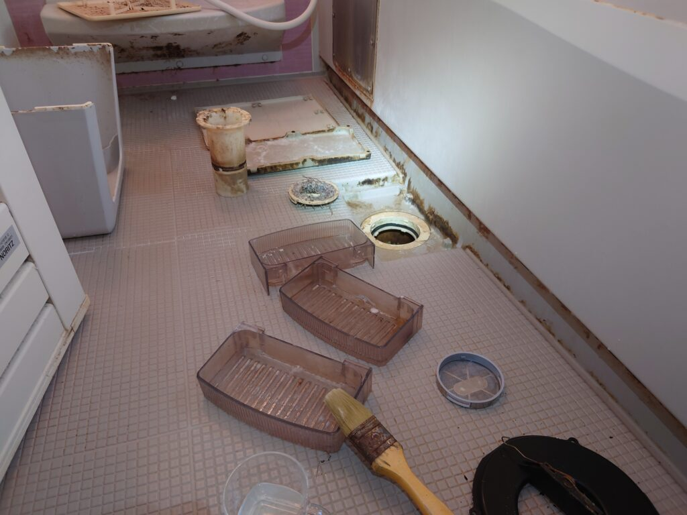
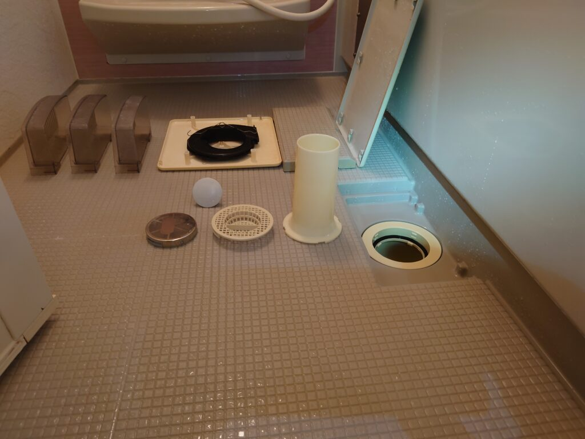

最近とても人気です!浴室スペシャルクリーニング（4時間掛けて隅々まで綺麗にします）千葉県柏市のY様お風呂をスペシャルクリーニングしました。

千葉県柏市のY様浴室スペシャルクリーニングを実施しました。最近このお風呂のスペシャルクリーニングコースが人気です!4時間掛けて隅々まで綺麗にします。浴室のカビ汚れ、壁面の石鹸カス汚れ、シャワー蛇口周りのスケールという石化してしまった浴室特有の堆積汚れを隅々までDAIZENクリーニングメソッドで除去してクリーニングします。お風呂の汚れはとても複雑で、特殊です。水垢、カビ汚れ、石鹸カス、湯垢、水道のカルシウム、錆汚れ、様々な有機物が融合して堆積汚れを構築しておりますので、それぞれのエレメントの特性を熟知したDAIZENクリーニングメソッドで、特殊薬剤、専用薬剤、特殊クリーニングツールを駆使して4時間掛けて隅々まで綺麗にします!宜しくお願いいたします。


